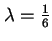
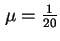
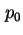
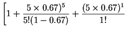
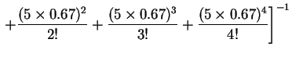
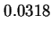
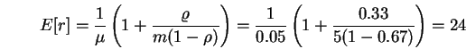
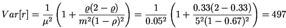
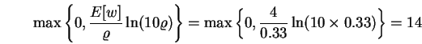

ห้องปฏิบัติการคอมพิวเตอร์สามารถจำลองโดยใช้ คิว อัตราการเข้าใช้บริการ  คนต่อนาที และมีอัตราการบริการ  คนต่อนาที แทนค่าในสมการ Traffic Intensity จะได้
| (5.18) |
ความน่าจะเป็นที่เครื่องคอมพิวเตอร์ทุกเครื่องว่างเท่ากับ
|  |  | ||
|  | (5.19) | ||
|  | (5.20) |
ความน่าจะเป็นที่เครื่องคอมพิวเตอร์ทุกเครื่องเต็มเท่ากับ
| (5.21) |
ค่าเฉลี่ยภาระงานของคอมพิวเตอร์ (Utilzation for each Computer) เท่ากับ
| (5.22) |
ค่าเฉลี่ยของจำนวนนักศึกษาในห้องปฏิบัติการคอมพิวเตอร์เท่ากับ
| (5.23) |
ค่าเฉลี่ยของจำนวนนักศึกษาที่รอการใช้งานสามารถหาได้จาก
| (5.24) |
ค่าเฉลี่ยของจำนวนนักศึกษาที่กำลังใช้งานคอมพิวเตอร์เท่ากับ
| (5.25) |
ค่าเฉลี่ยและความแปรปรวนของเวลาที่ใช้ในห้องปฏิบัติการคอมพิวเตอร์เท่ากับ
|  | (5.26) |
|  | (5.27) |
ดังนั้นนักศึกษาใช้เวลาเฉลี่ย 24 นาทีในห้องปฏิบัติการคอมพิวเตอร์ โดยรอ 4 นาที และ ใช้คอมพิวเตอร์เป็นเวลา 20 นาที เราสามารถหาได้อีกวิธีหนึ่งโดย
| (5.28) |
90-Percentile ของเวลาที่รอรับบริการเท่ากับ
|  | (5.29) |
จากการคำนวณแสดงถึงว่า 10 %ของนักศึกษาต้องรอนานกว่า 14 นาที